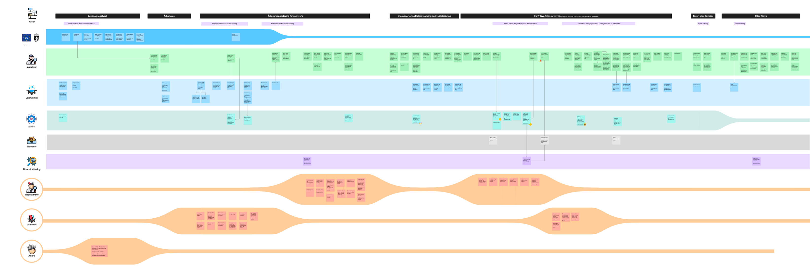
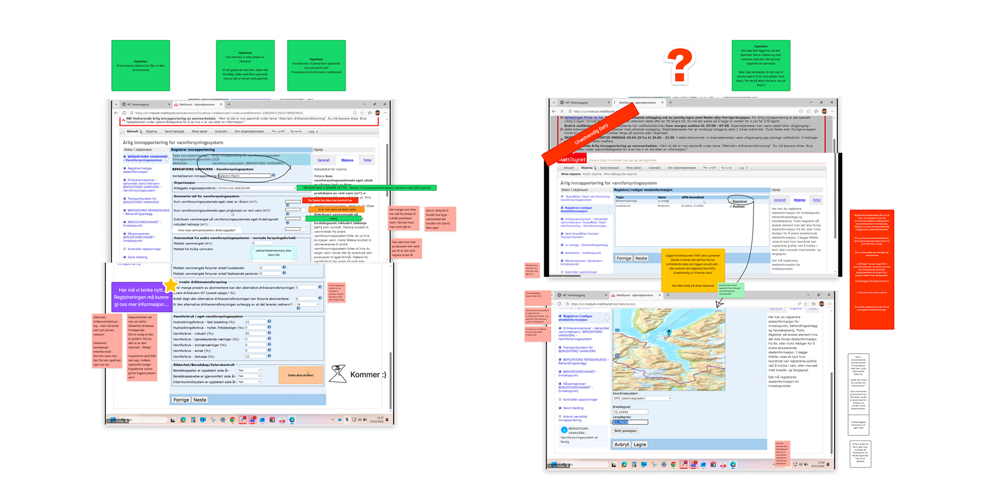
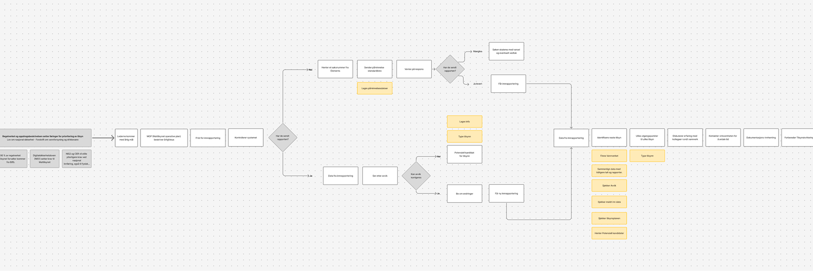
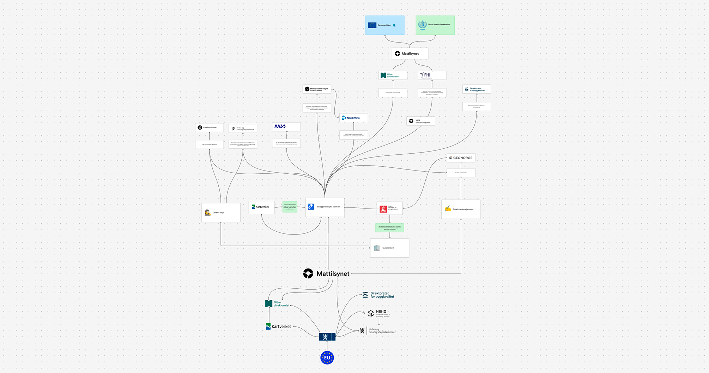
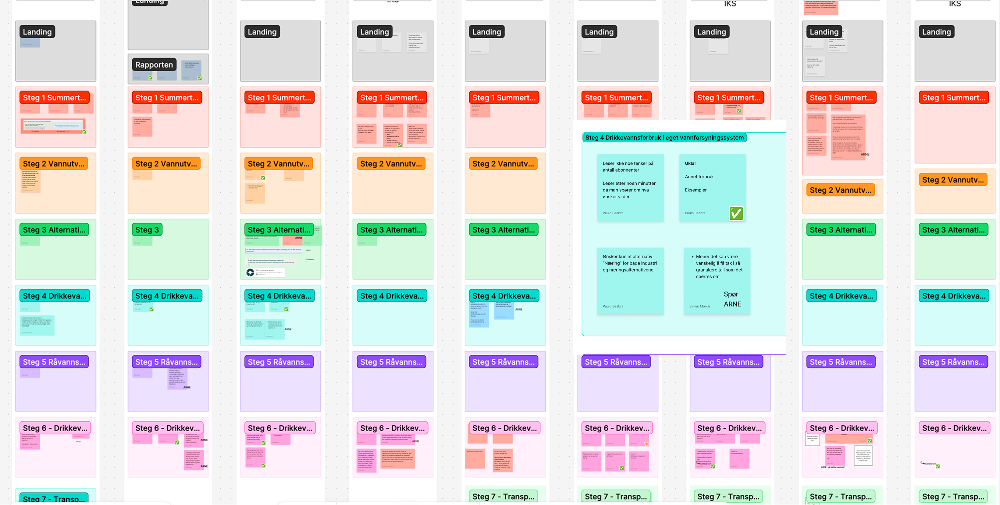

Mattilsynet · Lead Service Designer
Designing for safe drinking water
Helping waterworks and inspectors spot risks and act early.

Mattilsynet’s service for reporting drinking water data had evolved inside a monolithic system over roughly 25 years. Waterworks used it to submit information about water quality, operations and preparedness. Inspectors needed that information to understand risks and determine what required attention.
The problem went beyond a complicated form. Norway’s National Audit Office found that the reporting system did not provide sufficiently reliable information for oversight, and that Mattilsynet’s digital tools were poorly suited to analysis and follow-up.
Each year, municipalities spent the equivalent of 22 full-time employees reporting drinking water data, while Mattilsynet spent another six trying to interpret it. Despite that effort, the information remained difficult to use effectively.
The challenge was to make the information more reliable and useful for decisions about drinking water safety.

Understanding both sides of the data
I worked with more than 15 municipal users and a similar number of Mattilsynet inspectors to understand how information moved through the service.
We investigated where reporting became difficult, which requirements caused uncertainty and how inspectors worked with the information they received.
Handling laboratory results was one recurring problem. More broadly, the research showed why improving the reporting experience alone would not be enough. The information also needed to work for those responsible for interpreting it.

Building a shared model of the service
We reconstructed the existing service in Miro, bringing together legacy screens, research findings, regulatory requirements and dependencies.
Through workshops, we examined what needed to remain, what could be simplified and where the structure itself needed to change.
The map became a shared reference for decisions. Instead of discussing individual screens in isolation, we could see how changes affected the wider information flow.
Moving into working software
I moved directly from the shared model into a coded prototype, using OpenCode and components from Mattilsynet’s design system.
The prototype allowed us to experience complex interactions and data relationships rather than infer how they might work from static designs.
This was particularly useful for laboratory results, sampling requirements and the dependencies between different parts of the service.

Refining through a living prototype
We tested the prototype with Mattilsynet officers before involving municipal users.
Over several months, the prototype evolved through hundreds of changes to terminology, structure and interaction.
We refined how samples were handled, reorganised parts of the reporting flow and adjusted how information was presented as new evidence emerged.
In some meetings, we could agree on a change, implement it and evaluate the result together.
I also created specialised Copilot agents to help the team access relevant regulations, domain knowledge and research material.
Connecting design and development
Working with a coded prototype changed how decisions were made and communicated.
Stakeholders could experience proposed changes directly, while developers could inspect functioning interactions and build on the prototype rather than reconstruct the behaviour from static screens.
The prototype became both a way to test ideas and a concrete foundation for further development.

Result
The project established a shared direction for replacing a legacy service that was costly to operate and difficult to use for oversight.
Research connected the needs of waterworks and inspectors. The shared model clarified dependencies, while the working prototype allowed decisions to be tested and refined before implementation.
The broader objective is to reduce unnecessary manual work and improve the reliability of information used for oversight.
The work shifted the focus from completing a report to producing information that can support decisions about drinking water safety.
Working prototype
Explore the prototype
Built and iterated directly in code using AI-assisted development, with continuous input from domain experts and users.